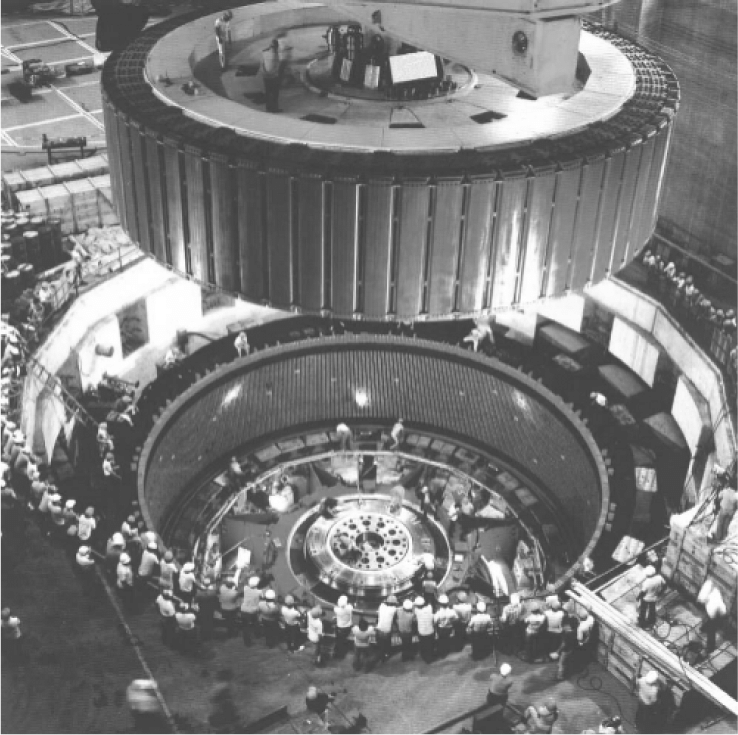
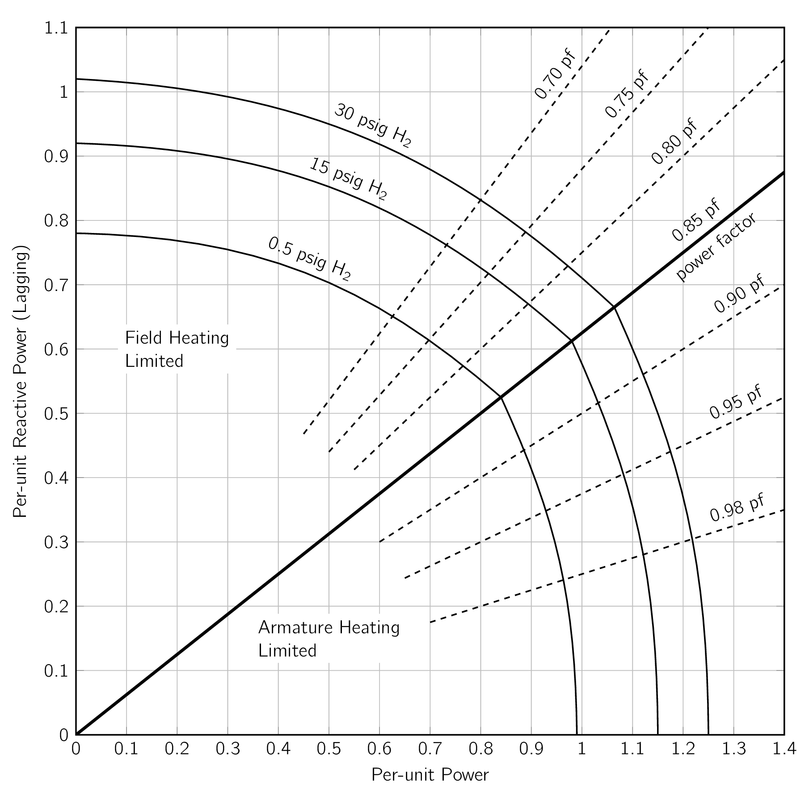
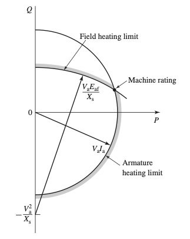
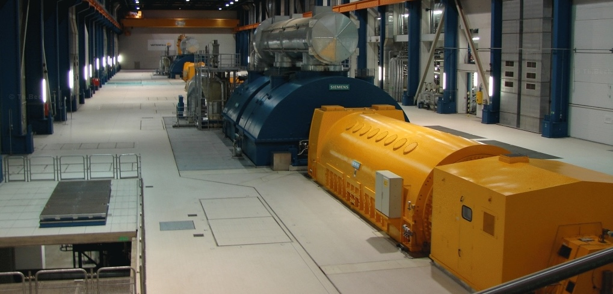
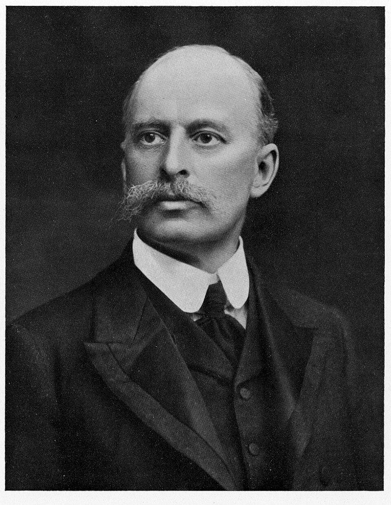
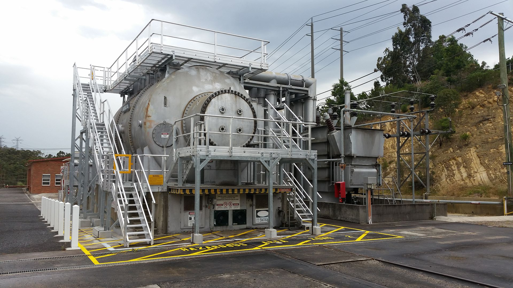

The principal steady-state operating characteristics of a SynMSynchronous Machinean AC electrical device which operates at a constant synchronous speed, serving as either a synchronous generator (alternator) or a synchronous motor. It features a stationary stator with three-phase windings and a rotating rotor excited by direct current (DC) or permanent magnets. are described by the interrelations between:
-
terminal voltage (),
-
field current (),
-
armature current (),
-
power factor (), and
-
efficiency ().
Here, we will look at some performance characteristics of importance in practical application of SynMSynchronous Machinean AC electrical device which operates at a constant synchronous speed, serving as either a synchronous generator (alternator) or a synchronous motor. It features a stationary stator with three-phase windings and a rotating rotor excited by direct current (DC) or permanent magnets.s. SynGSynchronous GeneratorSynchronous Generators are usually rated in terms of a maximum apparent power [140] This is described either in or . load at a specific voltage and power factor, often 80, 85, or 90 percent lagging, which they can carry continuously without overheating.
As they are typically operated with terminal voltage regulation, SynGSynchronous GeneratorSynchronous Generator normally operate at a terminal voltage whose value is within percent of rated voltage.
When the real-power loading and voltage are fixed, the allowable reactive-power loading is limited by either armature- or field-winding heating. The allowable operating region for a synchronous generator is frequently presented in the form of a capability curve which gives the maximum reactive-power loadings corresponding to various real power loadings with operation at rated terminal voltage.
A typical set of capability curves for a large, hydrogen-cooled turbine generator is shown in Fig. 5.17.
The three-curves correspond to differing pressure of the hydrogen cooling gas.
Increasing the hydrogen pressure improves cooling and permits a larger overall loading of the machine.
Armature-winding heating is the limiting factor in the region from unity to rated power factor. [141] 0.85 lagging power factor in Fig. 5.17.
For lower power factors, field-winding heating is the limiting factor, seen in Fig. 5.17

Capability curves provide valuable insight both to power system planners and to operators. As system planners consider modifications and additions to power systems, they can readily see whether the various existing or proposed generators can safely supply their required loadings. Similarly, power system operators can quickly see whether individual generators can safely respond to changes in system loadings which occur during the normal course of system operation.
The derivation of capability curves such as those in Fig. 5.17 can be seen as follows. Operation under conditions of constant terminal voltage and armature current [142] at the maximum value permitted by heating limitations corresponds to a constant value of apparent output power determined by the product of terminal voltage and current.
Given the per-unit apparent power () is given by:
| (5.45) |
where represents the per-unit real power and represents the per-unit reactive power, we can see a constant apparent power corresponds to a circle centered on the origin on a plot of reactive power versus real power.
From Eq. (5.45) , for constant terminal voltage, constant apparent power corresponds to constant armature-winding current and hence constant armature-winding heating.

Such a circle, corresponding to the maximum acceptable level of armature heating, is shown in Fig. 5.18.
Similarly, consider operation when terminal voltage is constant and field current [143] and hence generated voltage . is limited to a maximum value, also determined by heating limitations. In per unit notation we write it as,
| (5.46) |
From Eq. (5.22) , with :
| (5.47) |
Eq. (5.46) and Eq. (5.47) can be solved to give us the following expression:
| (5.48) |
This equation corresponds to a circle centered at as shown in Fig. 19 and determines the field-heating limitation on machine operation shown in Fig. 18.

It is common to specify the rating [144] apparent power and power factor. of the machine as the point of intersection of the armature- and field-heating limitation curves as shown in Fig. 5.19.
As can be seen from the capability curves of Fig. 5.17, there are additional limitations imposed on operation of a generator when operating under-excited and absorbing reactive power ().
These limitations, NOT shown in Fig. 5.18, are associated with heating in the end regions of the stator core of a generator under under-excited operating conditions as well as stability limits imposed by the system to which a specific generator is connected.
For a given real-power loading and terminal voltage, the power factor at which a SynMSynchronous
Machinean AC electrical device which operates at a constant synchronous speed, serving as either a
synchronous generator (alternator) or a synchronous motor. It features a stationary stator with
three-phase windings and a rotating rotor excited by direct current (DC) or permanent magnets.
operates, and therefore its armature current, can be controlled by adjusting its field excitation
().
A plot of armature current as a function of field current at constant real power
and terminal voltage is known as a V curve because of its characteristic shape,
which was originally proposed by W. M. Mordey [145] 
If it were not for the small effects of armature resistance, motor and generator compounding curves would be identical except that the lagging- and leading-power- factor curves would be interchanged.
The nature of a V-curve is best understood with the aid of a phasor diagram. Consider the phasor diagram of Fig. 5.21, representing Eq. (5.47) for a synchronous generator operating at constant terminal voltage , constant real power and three different values of field current.
To simplify this discussion, we will assume that all quantities are expressed in per unit and thus the real power is given by
| (5.49) |
where is the angle of with respect to . Because and are constant, we see from Eq. (5.49) that
| (5.50) |
and therefore the projection of onto is constant. As a result, the tips of all the phasors must lie along the vertical dotted line labeled “Locus of ” in Fig. 5.21. Similarly, because is obtained by adding the phasor , which is perpendicular to the phasor , to , it can be shown that the tips of all the phasors must lie along the horizontal dotted line labeled “Locus of ” in Fig. 5.21.
Consider operation at current in Fig. 5.21, in which case the generator is operating at a leading power factor ( is positive) and hence its reactive power output, given by
| (5.51) |
is negative. [146] i.e. the generator is absorbing reactive power from the external system.
Under this operating condition, the corresponding generated voltage has the smallest magnitude of the three operating points, corresponding to the smallest value of field current as can be seen from Eq. (5.34) .
When a synchronous generator is absorbing reactive power, it is said to be under-excited.
Next consider unity-power-factor operation, corresponding to the terminal current in the phasor diagram. We see that the magnitude of the corresponding generated voltage is larger than that of the first operating condition. Therefore we see that if the generator is operating under-excited, an increase in field current will reduce the armature current and improve the power factor, reducing the reactive power absorbed by the generator.
A minimum of armature current will occur when the generator is operating at unity power factor, meaning zero reactive power. As can be seen from the phasor diagram, a further increase in field current [147] and a corresponding increase in . will result in an increase in armature current from its minimum value.
When a synchronous generator is supplying reactive power, it is said to be over-excited.
Special Case: Synchronous Condenser
As we have seen, SynGSynchronous GeneratorSynchronous Generator can supply both real and
reactive power. A special type of SynGSynchronous GeneratorSynchronous Generator, designed to
supply only reactive power, is referred to as a synchronous condenser. [148] 
To a simple approximation, they can be thought of as an adjustable ACAlternating CurrentAn electric current that periodically reverses direction and changes its magnitude continuously with time, in contrast to direct current (DC), which flows only in one direction. voltage source controlled by their field current.
this type of operating corresponds to operating along the zero-real-power axis of the capability curves of Figs. 5.18 and 5.19.
-
¶
- ACAlternating Current
An electric current that periodically reverses direction and changes its magnitude continuously with time, in contrast to direct current (DC), which flows only in one direction.
-
¶
- SynGSynchronous Generator
Synchronous Generator
-
¶
- SynMSynchronous Machine
an AC electrical device which operates at a constant synchronous speed, serving as either a synchronous generator (alternator) or a synchronous motor. It features a stationary stator with three-phase windings and a rotating rotor excited by direct current (DC) or permanent magnets.